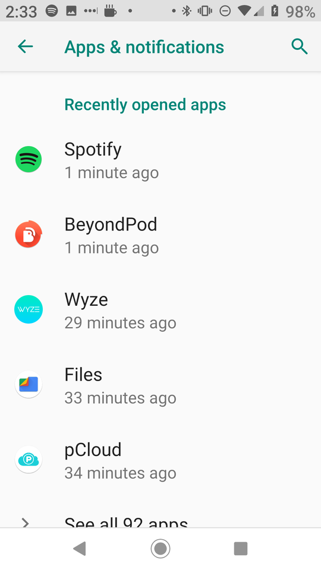
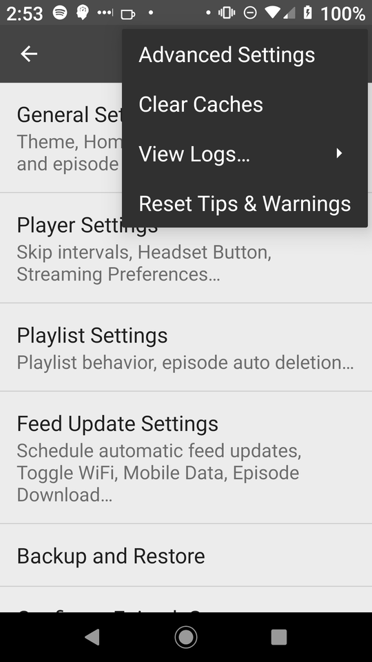
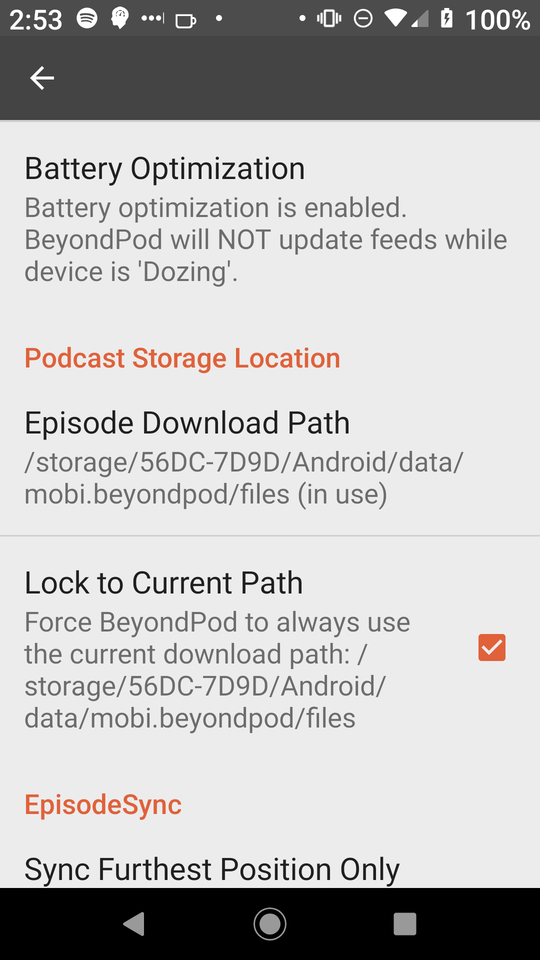

Moving BeyondPod Files To the SDCard (Android 9)
Table of Contents
Introduction
I don't follow the changes going on with Android closely enough to know exactly when all the changes were made to disable moving things to the SD Card, but I've been running out of storage recently, even though my SD Card has over 60 GB of free space so I looked into it and there are currently three things that seem to have changed that caused this problem with my Moto-X running Android Pie (9):
- The option to use the SDCard as an extention of the Internal Storage has disappeared from the storage options.
- The option to move any of my apps to the SDCard has disappeared from the Apps' settings
- The last update seems to have broken all the connections between my apps and the SDCard so none of them are (were) using the external storage
There might be a way to get around the first two problems, but I don't really feel like chasing that right now. It turns out that fixing the last case for some of my apps works, but isn't as intuitive as I would like it to be. Here's what to do.
Give Your App Storage Permissions
Settings
In your Android settings menu pick "Apps & notifications".

Apps & Notifications
Next pick Beyond Pod from the list of applications (in this case it was one of my recently opened applications, but it isn't always).

App Info
In the BeyondPod settings make sure that Permissions has Storage listed, if not tap the Permissions to get to that setting.

App Permissions
In the "App permissions" make sure the switch next to "Storage" is turned on.

Figure Out The Path To Your SDCard
Using ADB
I couldn't any way to find out the path to the sdcard in the Android settings themselves. The easiest way (to me) is to set up android debug bridge and then list the contents of the storage folder.
hades@erebus ~/d/datasets [1]> adb shell
payton_sprout:/ $ ls /storage/
ls: /storage//193D-4160: Permission denied
56DC-7D9D emulated self
payton_sprout:/ $ df -h storage/56DC-7D9D/
Filesystem Size Used Avail Use% Mounted on
/mnt/media_rw/56DC-7D9D 60G 3.5G 56G 7% /storage/56DC-7D9D
The Wrong Way
If you look at the permissions for the folder you can see that the folder itself has read-write permissions if you're root or part of the sdcard_sw group
payton_sprout:/ $ ls -l storage/56DC-7D9D/
ls: storage/56DC-7D9D//.android_secure: Permission denied
total 128
drwxrwx--x 3 root sdcard_rw 131072 2019-01-27 14:04 Android
and although there is that Permission denied for the .android_secure file, it let me create folders and files in there so I figured I would create a folder for downloads and point BeyondPod to it.
It turns out that this doesn't work. I was going to walk through the error but I've already set it up the right way and I don't want to undo it. The key to figuring out why it kept telling me my folder didn't exist or was read only was finding this beyondpod forums thread. It looks like when you give permission to BeyondPod to use the SDCard, Android creates a specific folder that BeyondPod can use and you have to point it there. The format is:
/storage/<sd card>/d/data/mobi.beyondpod/files/
So in my case the path is:
/storage/56DC-7D9D/Android/data/mobi.beyondpod/files/
Using "Files" Instead of ADB
Even though the Settings menus don't seem to show you the path to the sdcard you can use a file browser app if you don't want to use adb. Here's my sdcards name in the files app (it's not a file browser, but it's rather something that's supposed to help you clean up your storage but it works for this case).

Last Step: Point Beyond Pod To the SDCard
Settings
Open Beyond Pod and scroll to the bottom feeds list and tap on the Settings option.

Advanced Settings
Now click on the hamburger menu icon on the top right to open it up and tap on Advanced Settings.

Podcast Storage Location
Scroll all the way down until you reach the Podcast Storage Location section and tap on Episode Download Path to enter the folder path. You should probably also click Lock to Current Path as well.

Once you change the settings BeyondPod will move the files and restart and at this point it should be storing everything to the SDCard. Now, on to all the other apps in there.